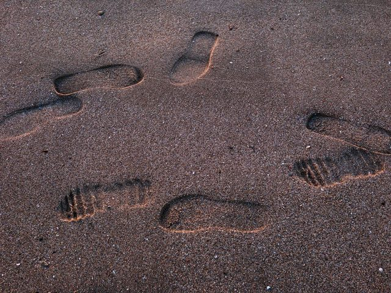
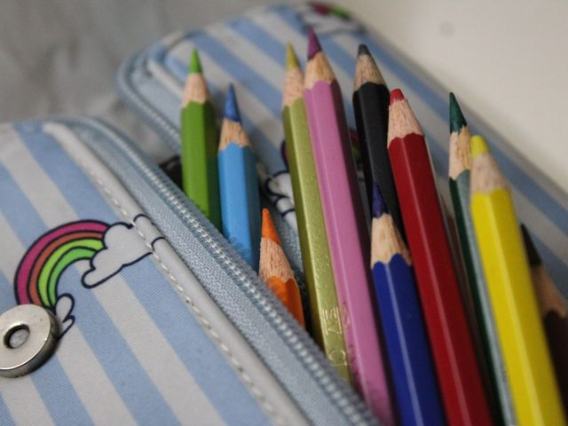
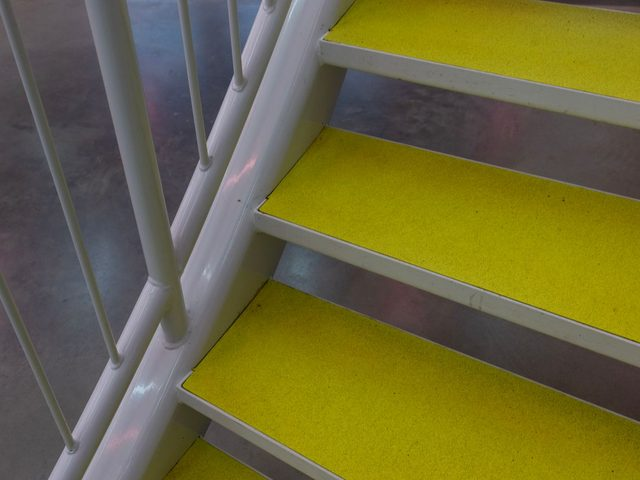

LALA WORD · UNIT 17
一字多義（十七）
Why Taylor Swift's Music Stays in Our Hearts
10 個單字一字多義
本單元單字一覽
present 是禮物，也是「現在」和「發表」；spot 是地點，也是「斑點」和「看見」。這個單元有 4 個主題單字、6 個更多單字，最後整理都是「禮物」的 gift／present。
followcasepresentspotdealdegreeformstampstepwhile
每個字先聽 🔊，再一個意思一個意思看例句。
1. follow 主題單字．5 個意思

follow
follow - followed - followed - following
v.關注；追蹤
I follow my favorite singer on Instagram.
我在 IG 上追蹤我最喜歡的歌手。
v.跟著
Follow me. I'll show you the way.
跟我來，我帶你去。
v.遵守
Please follow the rules.
請遵守規則。
v.理解；聽懂
Sorry, I can't follow you. Can you say it again?
抱歉，我聽不懂，可以再說一次嗎？
v.接著發生
Dinner was followed by a movie.
晚餐後接著看電影。
2. case 主題單字．3 個意思

case
複數 cases
n.情況in that case 那樣的話；in case 以防萬一
In that case, let's stay home.
那樣的話，我們就待在家吧。
n.案件；病例
There are more flu cases this winter.
今年冬天流感病例變多了。
n.盒；箱；套pencil case 鉛筆盒；bookcase 書架
Put your glasses in the case.
把眼鏡放進盒子裡。
3. present 主題單字．6 個意思

present
present - presented - presented - presenting
n.現在at present 目前（唸 [ˋprɛznt]）
Forget the past and enjoy the present.
忘了過去，享受現在。
n.禮物
Thank you for the birthday present.
謝謝你的生日禮物。
adj.在場的；出席的
All the students are present today.
今天全班都到齊了。
adj.目前的
What is your present address?
你目前的地址是什麼？
v.發表；提出動詞唸 [prɪˋzɛnt]
Each group will present its report.
每一組都要上台報告。
v.頒發；給予
The principal presented the prizes to the winners.
校長把獎頒給優勝者。
4. spot 主題單字．4 個意思

spot
spot - spotted - spotted - spotting
n.地點on the spot 當場；立刻
This is a great spot for a picnic.
這是野餐的好地點。
n.斑點；汙漬
A leopard has black spots.
豹身上有黑色斑點。
n.痘痘
I have a spot on my nose.
我鼻子上長了一顆痘痘。
v.看見；發現
Can you spot the difference?
你看得出差別嗎？
5. deal 更多單字．5 個意思

deal
deal - dealt - dealt - dealing
v.處理；應付deal with 處理
I can deal with this problem.
這個問題我可以處理。
v.販賣；做生意
The shop deals in old books.
這家店專賣舊書。
v.發（牌）
It's your turn to deal the cards.
輪到你發牌了。
n.交易；划算的買賣It's no big deal. 沒什麼大不了
This bike is a good deal.
這台腳踏車買得很划算。
n.大量a great deal of 很多
He spends a great deal of time on games.
他花很多時間打電動。
6. degree 更多單字．3 個意思
degree
複數 degrees
n.度（溫度、角度）
It's 30 degrees today.
今天三十度。
n.學位
My aunt has a degree in music.
我阿姨有音樂學位。
n.程度
I agree with you to some degree.
我某種程度上同意你。
7. form 更多單字．4 個意思

form
form - formed - formed - forming
v.形成；組成
The students formed a circle.
學生們圍成一個圈。
n.表格fill out a form 填表格
Please fill out this form.
請填寫這份表格。
n.形式；樣子
The past form of "eat" is "ate."
eat 的過去式是 ate。
n.類型
Walking is a good form of exercise.
走路是一種很好的運動。
8. stamp 更多單字．4 個意思

stamp
stamp - stamped - stamped - stamping
n.郵票
I need a stamp for this letter.
這封信需要一張郵票。
n.印章；戳記
The teacher put a star stamp on my homework.
老師在我的作業上蓋了星星章。
v.蓋章
Stamp the card when you get here.
到了這裡就在卡上蓋章。
v.跺腳
The angry boy stamped his feet.
生氣的男孩跺腳。
9. step 更多單字．4 個意思

step
step - stepped - stepped - stepping
n.步驟；階段step by step 一步一步
Follow the steps to make the cake.
照著步驟做蛋糕。
n.措施take steps 採取措施
We must take steps to save water.
我們必須採取措施節約用水。
n.腳步in step 步伐一致
Take one step forward.
向前走一步。
n.臺階
Watch your step!
小心腳下的臺階！
10. while 更多單字．4 個意思

while
conj.當…的時候
The phone rang while I was taking a shower.
我在洗澡的時候電話響了。
conj.然而
I like dogs, while my sister likes cats.
我喜歡狗，而我妹妹喜歡貓。
conj.雖然
While the test was hard, I passed it.
雖然考試很難，我還是通過了。
n.一段時間for a while 一會兒
Please wait for a while.
請稍等一會兒。
易混淆字：gift 和 present
| 單字 | 用法 | 例句 |
|---|---|---|
| gift | 禮物（比較正式，也用在商業：gift card、gift shop）；天分 | She has a gift for music. |
| present | 禮物（日常說法）；也當「現在的、在場的」「發表、贈送」 | I got a birthday present. |
present 名詞、形容詞唸 [ˋprɛznt]，動詞唸 [prɪˋzɛnt]。
一字多義：最常見 vs. 容易忽略的意思
| 單字 | 最常見的意思 | 容易忽略的意思 |
|---|---|---|
| follow | 跟著 | 關注；聽懂 |
| case | 情況 | 盒子；病例 |
| present | 禮物 | 現在；在場的；發表 |
| spot | 地點 | 斑點；痘痘；看見 |
| deal | 交易 | 處理；發牌 |
| degree | 度 | 學位；程度 |
| form | 表格 | 形成；形式 |
| stamp | 郵票 | 蓋章；跺腳 |
常用片語
| 片語 | 意思 | 例句 |
|---|---|---|
| in that case | 那樣的話 | In that case, I'll take a taxi. |
| on the spot | 當場；立刻 | He answered on the spot. |
| deal with | 處理 | How do you deal with stress? |
| It's no big deal. | 沒什麼大不了 | Don't worry. It's no big deal. |
| fill out a form | 填表格 | Fill out this form, please. |
| step by step | 一步一步 | Learn it step by step. |
| for a while | 一會兒 | Let's rest for a while. |
快問快答：這句的 粗體字 是什麼意思？
1Dinner was followed by a movie.接著發生
2Put your glasses in the case.盒；箱；套
3The principal presented the prizes to the winners.頒發；給予
4Can you spot the difference?看見；發現
5He spends a great deal of time on games.大量
6I agree with you to some degree.程度
7Walking is a good form of exercise.類型
8The angry boy stamped his feet.跺腳
快問快答：這句的 粗體字 是什麼意思？
1Watch your step!臺階
2Please wait for a while.一段時間
學完了！接下來
複習方法
review
- 回到「📗 單字卡」，按「遮中文」，看例句說出每個意思
- 特別記「容易忽略的意思」（例如 pen 圍欄、ball 舞會）
- 每個例句跟著 🔊 唸一次
準備好了
- 按右上角「📝 前往測驗」
- 測驗錯的題目要訂正到全對
- 訂正完成補送 1 點